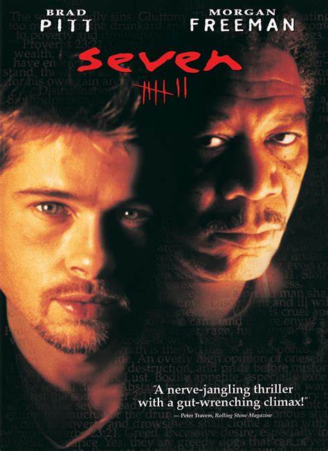

Movies to watch
Movies to watch when you get bored, these are some top picks

Interstellar
Interstellar is a 2014 epic science fiction film co-written, directed, and produced by Christopher Nolan. It stars Matthew McConaughey, Anne Hathaway, Jessica Chastain, Bill Irwin, Ellen Burstyn, Matt Damon, and Michael Caine. Set in a dystopian future where humanity is struggling to survive, the film follows a group of astronauts who travel through a wormhole near Saturn in search of a new home for mankind.
Brothers Christopher and Jonathan Nolan wrote the screenplay, which had its origins in a script Jonathan developed in 2007. Caltech theoretical physicist and 2017 Nobel laureate in Physics[4] Kip Thorne was an executive producer, acted as a scientific consultant, and wrote a tie-in book, The Science of Interstellar. Cinematographer Hoyte van Hoytema shot it on 35 mm movie film in the Panavision anamorphic format and IMAX 70 mm. Principal photography began in late 2013 and took place in Alberta, Iceland, and Los Angeles. Interstellar uses extensive practical and miniature effects and the company Double Negative created additional digital effects.
Interstellar premiered on October 26, 2014, in Los Angeles, California. In the United States, it was first released on film stock, expanding to venues using digital projectors. The film had a worldwide gross over $677 million (and $773 million with subsequent re-releases), making it the tenth-highest grossing film of 2014. It received acclaim for its performances, direction, screenplay, musical score, visual effects, ambition, themes, and emotional weight. It has also received praise from many astronomers for its scientific accuracy and portrayal of theoretical astrophysics. Since its premiere, Interstellar gained a cult following, and now is regarded by many sci-fi experts as one of the best science-fiction films of all time.[5][6] Interstellar was nominated for five awards at the 87th Academy Awards, winning Best Visual Effects, and received numerous other accolades.

Seven
Seven (stylized as Se7en)[1] is a 1995 American crime thriller film directed by David Fincher and written by Andrew Kevin Walker. It stars Brad Pitt, Morgan Freeman, Gwyneth Paltrow, and John C. McGinley. Set in a crime-ridden, unnamed city, Seven's plot follows disenchanted, near-retirement detective William Somerset (Freeman) and his new partner, the recently transferred David Mills (Pitt), as they attempt to stop a serial killer before he can complete a series of murders based on the seven deadly sins.
Walker, an aspiring writer, wrote Seven based on his experiences of moving from a suburban setting to New York City in the late 1980s, during a period of rising crime and drug addiction. His script was optioned by an Italian film company which underwent financial difficulties and sold the rights on to New Line Cinema. Executives were opposed to the script's bleak ending and mandated a more mainstream, upbeat outcome. Eager to prove himself after the failure of his first feature film project, Alien 3, Fincher read Walker's original script which he was sent by mistake and agreed to direct as long as the ending remained. The studio continued its efforts to change the ending, but faced opposition from Fincher and the cast. On a $33–$34 million budget, principal photography took place mainly on location in Los Angeles. Rob Bottin helmed the special effects team responsible for realizing the elaborate murders, using makeup and prosthetics.
Seven received middling test audience results and was not expected to perform well due to its violent and mature content, but it went on to earn $327.3 million worldwide, becoming a surprise success and one of the highest-performing films of the year. Reviews were more mixed, with critics praising Freeman's performance, but criticizing the dark cinematography, implicit and implied violence, and the bleak ending. Seven revitalized Fincher's career and helped Pitt transition from roles based on his appearance to more serious, dramatic roles.
Seven is now regarded as one of the best thriller, crime, and mystery films ever made. It remains influential in filmmaking, inspiring a host of imitators of its aesthetic, style, and premise of detectives chasing down serial killers with distinctive methods and motives. The film's title sequence, depicting the killer preparing for his actions later in the film, is considered an important design innovation and also influential on future credit sequences, while Seven's twist ending has been named as one of the best in cinematic history.

Saving Private Ryan
Saving Private Ryan is a 1998 American epic war film directed by Steven Spielberg and written by Robert Rodat. Set during the Battle of Normandy in World War II, the film is known for its graphic portrayal of war, especially its depiction of the Omaha Beach assault during the Normandy landings. The film follows United States Army Rangers Captain John H. Miller (Tom Hanks) and his squad (Tom Sizemore, Edward Burns, Barry Pepper, Giovanni Ribisi, Vin Diesel, Adam Goldberg, and Jeremy Davies) as they search for a paratrooper, Private first class James Francis Ryan (Matt Damon), the last surviving brother of four, the three other brothers having been killed in action. The film was a co-production between DreamWorks Pictures, Paramount Pictures, Amblin Entertainment, and Mutual Film Company. DreamWorks distributed the film in North America while Paramount released the film internationally.
Rodat first wrote the script in 1994 after reading about the Niland brothers, and by 1996 producer Mark Gordon acquired the rights to Rodat's script. After eleven rewrites, Gordon began developing the project at Paramount.[3] Spielberg, who at the time was forming DreamWorks, was eventually hired by Paramount to direct the film while DreamWorks would co-finance as part of a deal. After the cast went through training supervised by Marine veteran Dale Dye, the film's principal photography started in June 1997 and lasted two months. The film's D-Day scenes were shot in Ballinesker Beach, Curracloe Strand, Ballinesker, just east of Curracloe, County Wexford, Ireland, and used members of the Irish Army reserve as extras to portray infantry for the D-Day landing.

Inglourious Basterds
Inglourious Basterds is a 2009 war film[7] written and directed by Quentin Tarantino, starring Brad Pitt, Christoph Waltz, Michael Fassbender, Eli Roth, Diane Kruger, Daniel Brühl, Til Schweiger and Mélanie Laurent. The film tells an alternate history story of two plots to assassinate Nazi Germany's leadership—one planned by Shosanna Dreyfus, a young French Jewish cinema proprietor, and the other by the British; but is ultimately conducted solely by a team of Jewish American soldiers led by First Lieutenant Aldo Raine. Christoph Waltz co-stars as Hans Landa, an SS colonel in charge of tracking down Raine's group. The title was inspired by Italian director Enzo G. Castellari's 1978 Euro War film The Inglorious Bastards, though Tarantino's film is not a remake of it.
Tarantino wrote the script in 1998, but struggled with the ending and chose instead to direct the two-part film Kill Bill. After directing Death Proof in 2007, Tarantino returned to work on Inglourious Basterds. A co-production of the United States and Germany, the film began principal photography in October 2008 and was filmed in Germany and France with a $70 million production budget. It premiered on May 20, 2009, at the 62nd Cannes Film Festival, and received a wide release in theaters in the United States and Europe in August 2009 by The Weinstein Company and Universal Pictures.

Good Will Hunting
Good Will Hunting is a 1997 American psychological drama film directed by Gus Van Sant, and written by Ben Affleck and Matt Damon. It stars Robin Williams, Damon, Affleck, Stellan Skarsgård and Minnie Driver.
The film received positive reviews from critics and grossed over $225 million during its theatrical run against a $10 million budget. At the 70th Academy Awards, it received nominations in nine categories, including Best Picture and Best Director, and won in two: Best Supporting Actor for Williams and Best Original Screenplay for Affleck and Damon. In 2014, it was ranked at number 53 in The Hollywood Reporter's "100 Favorite Films" list.